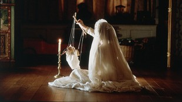
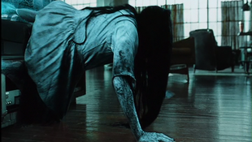
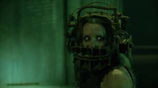
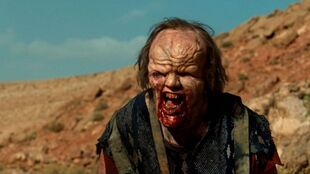

The 2000s saw a wave of horror remakes, bringing back classics with modern intensity. The torture porn subgenre also emerged, with films like Saw and Hostel focusing on extreme violence and psychological torment. Supernatural horror gained traction with hits like The Ring, blending eerie atmosphere with disturbing imagery.
A gothic horror film about a mother shielding her light-sensitive children from unseen forces in their isolated mansion, building an eerie atmosphere that leads to one of the genre’s most haunting and unforgettable twists.
A chilling supernatural horror about a cursed videotape that dooms its viewers to death in seven days. Blending eerie visuals, psychological tension, and a creeping sense of dread, the film introduced Samara, a vengeful ghost whose unsettling presence and tragic backstory made her one of horror’s most terrifying figures.
A psychological horror-thriller that launched the torture horror trend, Saw introduced the sadistic Jigsaw Killer, who forced victims into gruesome traps designed to test their will to live. Its shocking twists, moral dilemmas, and brutal scenarios made it a defining film of the 2000s horror landscape.
A brutal remake of Wes Craven’s 1977 classic, The Hills Have Eyes follows a stranded family in the desert, where they are hunted by grotesque, radiation-mutated cannibals. With intense violence, relentless suspense, and unflinching brutality, the film redefined survival horror for a modern audience.
| Nombre | ID | Carrera | Correo |
|---|---|---|---|
| Maria Jose Arévalo | 1094044725 | Jurisprudencia | mariaj.arevalo@urosario.edu.co |
| Daniela Cortes Rodriguez | 1095550727 | Jurisprudencia | daniela.cortesro@urosario.edu.co |